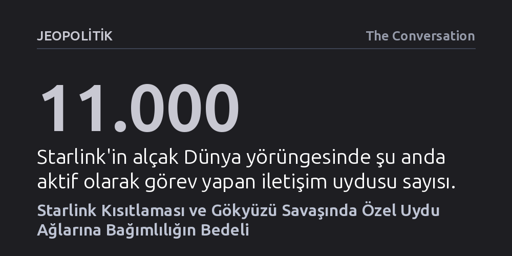

JEOPOLITIK · The Conversation · 2026-10-17
Starshield sistemine getirilen uzaktan hız kısıtlaması, Ukrayna'nın cephedeki hava harekatlarında özel uydu ağlarına ve müttefik siyasi iradesine olan kırılgan bağımlılığını ortaya koydu. Bu olay, yörüngedeki iletişim altyapısını kontrol eden az sayıda şirketin modern savaş dengelerini tek bir kod satırıyla değiştirebileceğini kanıtlıyor.
Modern savaş gücünün yalnızca silahlara değil, özel şirketlerin mülkiyetindeki uydu yazılımlarına ve onların siyasi kararlarına rehin olduğunu gösterir.

13 Ekim 2026 gecesi Ukrayna ordusu, Rus hava saldırılarını püskürtmek ve işgal altındaki topraklardaki askeri hedefleri vurmak için kullandığı yönlendirme sisteminde aniden büyük bir aksaklıkla karşılaştı. Finansmanı ABD hükümeti tarafından sağlanan ve Elon Musk'ın Starlink şirketi bünyesindeki Starshield altyapısıyla çalışan sistem, uzaktan gönderilen bir yazılım kısıtlamasıyla yavaşlatıldı. Herhangi bir ön bildirim yapılmaksızın devreye sokulan bu hız sınırı, Ukrayna'nın cephedeki çok sayıda hassas hava operasyonunun başarısızlıkla sonuçlanmasına yol açtı.
Yaşanan krizin ardından Ukrayna lideri Volodimir Zelenski bu müdahaleyi "büyük bir hata" olarak nitelendirdi. SpaceX ve Elon Musk ise sorumluluğun doğrudan ABD yönetiminden gelen talimatlarda olduğunu ima etti. Karşılıklı suçlamaların ardından hız kısıtlaması başladığı gibi aniden kaldırıldı ve iki gün içinde Starlink hizmeti yeniden tam kapasiteye döndü. Ancak bu 48 saatlik kesinti, modern bir ordunun en gelişmiş savunma operasyonlarının bile uzaktan erişimli tek bir kod güncellemesiyle nasıl rehin alınabileceğini çıplak bir biçimde gösterdi.
Teknolojik iletişim ağları ile jeopolitik rekabetin kesişimi yeni bir olgu değildir. İngiliz coğrafyacı Halford Mackinder, 1904 yılında yayımladığı analizinde Avrasya'yı saran demiryolu hatlarının askeri gücün stratejik hareket kabiliyetini kökten değiştirdiğini savunmuştu. Mackinder'ın temel tespiti, öncü teknolojik ağların mesafe, hareketlilik ve askeri güç arasındaki güç ilişkisini yeniden yapılandırdığı gerçeğiydi. Demiryollarının sağladığı bu kara gücü avantajı, çok geçmeden hava gücünün ve bombardıman uçaklarının ortaya çıkışıyla sarsıldı.
Hava sahasının yeni bir cepheye dönüşmesi, erken Soğuk Savaş döneminde karmaşık radar ve hava savunma ağlarının inşasını tetikledi. Ardından gelen kıtalararası balistik füzeler ise mevcut savunma kalkanlarını işlevsizleştirerek süper güçleri karşılıklı garantili imha dengesine mahkum etti. Günümüzde ise bu tarihsel çizgi yeni bir evreye ulaştı. Alçak Dünya yörüngesindeki ticari uydu takımlarıyla entegre çalışan ucuz insansız hava araçları, savunulması son derece güç olan yepyeni bir hava savaşı paradigması yarattı.
Ukrayna'daki çatışma alanı, geçmişin tank ve yoğun piyade birliklerinden oluşan geleneksel cephe hatlarını çoktan geride bıraktı. Artık hakimiyet, gökyüzünde çarpışan insansız hava araçları üzerinden kuruluyor. Cephede 15 ila 30 kilometrelik doğrudan imha bölgesinde uçan küçük dronlardan, yüzlerce kilometre ötedeki veri merkezlerini ve lojistik hatları vuran stratejik hava araçlarına kadar geniş bir teknoloji yelpazesi kullanılıyor. Ancak bu araçların uçabilmesi, Çin'den geçen hammadde ve parça tedarikine, Washington ve Brüksel'in finansmanına ve yerel montaj atölyelerine dayanan küresel bir ağ gerektiriyor.
Bu sistemin en kritik halkası ise yönlendirme ve telekomünikasyon altyapısıdır. Ukrayna'nın derin saldırı yapan bazı dronları otonom arazi eşleme algoritmalarıyla bağımsız çalışabilse de cephedeki taktik operasyonların omurgasını Starlink'in 11 bini aşkın uydudan oluşan devasa ağı oluşturuyor. Son aylarda ise bu rekabette ibre Moskova'nın lehine dönmeye başladı. Rusya, Ukrayna'nın savunmasız kaldığı balistik füze üretimini artırırken, İran tasarımlarına dayanan jet motorlu hızlı Geran dronlarını sahaya sürüyor ve Rassvet adını verdiği kendi alçak yörünge iletişim ağını hızla inşa ediyor.
Starshield üzerinde uygulanan hız kesintisi, Ukrayna'nın zaten yoğun Rus füze saldırıları altında zorlandığı ve müttefik uydu erken uyarı verilerinin kesildiği kritik bir dönemde gerçekleşti. Washington'ın dayattığı tek taraflı enerji ateşkesi gibi siyasi beklentilerle birleşen bu teknolojik müdahaleler, Kiev'in stratejik hareket alanını doğrudan daralttı. Bir ülkenin beka mücadelesinin müttefik bir başkentin diplomatik manevralarına göre uzaktan kısıtlanabilmesi, askeri egemenlik kavramını kökten tartışmaya açıyor.
Bu krizin yansımaları Ukrayna sınırlarının çok ötesine uzanıyor. SpaceX'in alçak Dünya yörüngesini 42 bin uyduyla donatma projesi küresel iletişimi dönüştürürken, böylesine hayati bir stratejik gücün tek bir şirketin ve öngörülemeyen bir figürün elinde toplanması küresel ölçekte alarm zillerini çaldırıyor. Dünyanın önde gelen güçleri kendi bağımsız uydu takımlarını kurmak için yarışırken, alçak yörünge giderek daha kalabalık ve jeopolitik olarak çekişmeli bir mücadele alanına dönüşüyor. Hiçbir egemen devlet, kendi savunma sistemlerinin kaderini özel bir şirketin ticari veya siyasi tercihlerine bırakmak istemiyor.